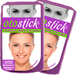

Корректоры для ушей СТОП УШАСТИК Otostick - новая разработка испанских ученых, выполненная из медицинского силикона и специального клея, который не раздражает кожу, держится до 7-10 дней и не боится воды. Корректоры имеют клинически доказанную эффективность в исправлении лопоухости у детей. Взрослые же могут наслаждаться эстетическим эффектом и быть во всеоружии тогда, когда это нужно.
Как фиксировать корректоры Стоп Ушастик Otostick
-
Очистить кожу
за ухом -
Определите
место фиксации,
оценивая результат
в зеркале -
Зафиксируйте
корректор к уху -
Зафиксируйте
к голове
Готово! Через
4 часа можно
принимать душ
В исследовании принимало участие 60 детей в возрасте
от 3-ех месяцев до 6 лет.
70%
оценили результат применения корректоров как хороший и очень хороший
Около 70% участников оценили результат лечения
как хороший и готовы продолжить участие в исследовании,
с целью достичь еще лучших результатов. В среднем,
за полгода применения корректора, удалось уменьшить
проявления лопоухости (оттопыренность ушей) на 20-30%
в зависимости от возраста пациентов. Наилучшие результаты
были получены у девочек в возрасте от 9 до 14 месяцев.
Конечные результаты исследования будут опубликованы в ноябре 2015 г.
Ушной корректор Отостик детский
с 3-ех месяцев

| Кол-во | Цена | Бонус |
|---|---|---|
| 1 уп. | 2080 р. | Участие в розыгрыше бесплатной упаковки |
| 2уп. | 4160 р. | Бесплатная доставка по Мск и СПб |
| 3 уп. | 6240 р. | Бесплатная доставка по России |
Ушной корректор Отостик взрослый
с 3-ех лет

| Кол-во | Цена | Бонус |
|---|---|---|
| 1 уп. | 1900 р. | Участие в розыгрыше бесплатной упаковки |
| 2уп. | 3800 р. | Бесплатная доставка по Мск и СПб |
| 3 уп. | 5700 р. | Бесплатная доставка по России |
Отзывы